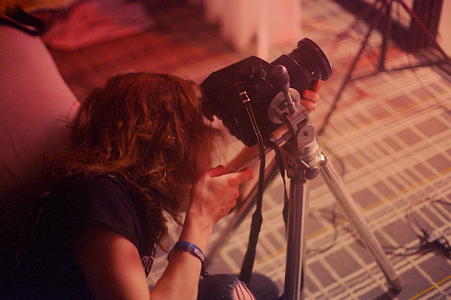

I'm Spunky. I've been a photographer for just over two years, starting in early 2022. I strive for a fine look and feel to my photos, inspired by the style of portraits from decades past; I want to make fursuiters look soft, warm, and pretty, just like they are in person.
I'm one of the two photographers working on Chasing Tail Magazine, a fursuit pinup and furry entertainment magazine. Outside of the fandom, I'm a part-time professional photographer, focusing on portraiture, cities and countryside, and still life work.
My biggest inspirations are pictorialists from the early 20th century, in particular William Mortensen and Rudolf Koppitz; I particularly love how kinetic or stoic their subjects appear, and the way they construct scenes with literal sets or through composition. More contemporary, I look up to ex-Playboy photographer Ken Marcus and his soft-focus erotic portraiture.
I personally strive to do everything "honestly" and in-camera. The look and feel, characteristics of, and effects in my photography are accomplished exclusively through lighting, filtration, composition, exposure, darkroom manipulation, and the choice of lens and film stock. I will never use any kind of digital photomanipulation, including any sort of airbrushing, composition, "photoshopping," content-aware fill, AI, or any similar tricks. I want my photography to be and represent honest artwork.
These photos of me were shot by my friend and colleague, Caesar Snep.I'm one of the two photographers working on Chasing Tail Magazine, a fursuit pinup and furry entertainment magazine. Outside of the fandom, I'm a part-time professional photographer, focusing on portraiture, cities and countryside, and still life work.
My biggest inspirations are pictorialists from the early 20th century, in particular William Mortensen and Rudolf Koppitz; I particularly love how kinetic or stoic their subjects appear, and the way they construct scenes with literal sets or through composition. More contemporary, I look up to ex-Playboy photographer Ken Marcus and his soft-focus erotic portraiture.
I personally strive to do everything "honestly" and in-camera. The look and feel, characteristics of, and effects in my photography are accomplished exclusively through lighting, filtration, composition, exposure, darkroom manipulation, and the choice of lens and film stock. I will never use any kind of digital photomanipulation, including any sort of airbrushing, composition, "photoshopping," content-aware fill, AI, or any similar tricks. I want my photography to be and represent honest artwork.
Check out more of his work: https://www.flickr.com/photos/caesarsnep
